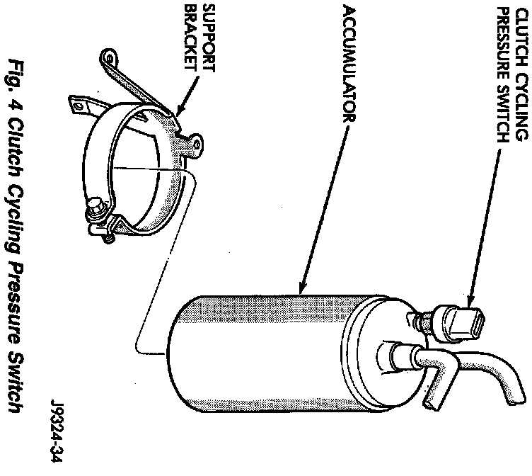
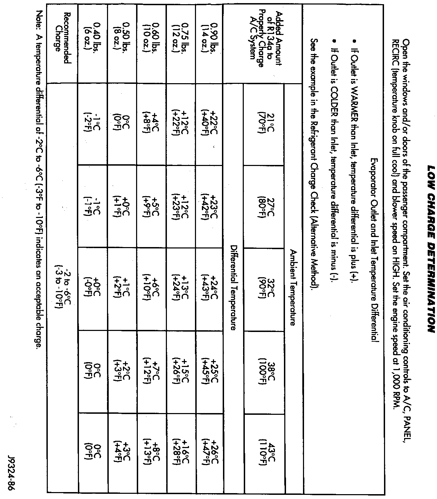

Alternative Method
ALTERNATIVE METHOD:This method of adding partial charge requires the measuring of the temperature difference between the evaporator inlet and outlet tubes. If it was not necessary to discharge the refrigerant system, a partial refrigerant charge can be added.
CAUTION: Review all Safety Precautions and Warnings before attempting to add refrigerant to the system. Do not add refrigerant to a system that is known to have a leak.
1. Check for leaks. If found correct the leaks.
System Leak Checking
CAUTION: DO NOT use an R-12 manifold gauge set on an R-134a system. The refrigerants are not compatible and system damage will result.
2. Attach manifold gauge set.
3. Attach the probes to the inlet and outlet tubes of the evaporator.
a. If a single temperature probe device is used, attach the probe to the evaporator inlet tube just before the collar of the quick-connect fitting. Be sure the end of the probe makes contact with the bottom surface of the tube.
b. If dual temperature probes are used, connect probe (1) to the evaporator inlet tube and probe (2) to the evaporator outlet tube. Be sure to connect the probe just before the collar of the quick-connect fittings. Be sure the end of the probes make contact with the bottom surface of the tubes. This tool will measure the temperature difference between the inlet tube and outlet tube.
4. Open the windows and/or doors of the passenger compartment. Set the air conditioning controls to A/C , PANEL, RECIRC (temperature knob on full cool) and blower speed on HIGH.
5. Start the engine and hold at 1,000 RPM. Allow the engine to warm up to normal operating temperature.
Fig.4 Clutch Cycling Pressure Switch:

6. The A/C clutch may cycle depending on ambient conditions. If clutch cycles, remove the clutch cycling pressure switch connector from the switch located on the accumulator. Place a jumper wire across the terminals of the clutch cycling pressure switch connector.
7. Hold the engine speed at 1,000 RPM.
8. Allow 3 to 5 minutes for the A/C system to stabilize. Record the temperature difference between the evaporator inlet and outlet tubes. Allow the equipment to stabilize.
a. If a single temperature probe device is used, record the temperature of the inlet tube. Remove the probe from the inlet tube and attach the probe to the outlet tube just before the quick-connect fitting. Be sure the end of the probe makes contact with the tube. Allow the equipment to stabilize. Record the temperature of the outlet line. Subtract the evaporator inlet temperature from the outlet temperature.
b. If dual temperature probes are used, record the temperature difference (probe 2 minus probe 1).
Low Charge Determination:

9. Refer to the Low Charge Determination chart. Depending on the ambient temperature and the recorded differential temperature, you can determine the additional charge required. If the measured temperature differential (refer to Low Charge Determination chart) is higher than 22 °C - 26 °C (40 °F - 47 °F), add 0.90 lbs. (14 oz.). Allow 3 to 5 minutes for the system to stabilize. Record the lowest temperature difference between the evaporator inlet and outlet tubes and, again, refer to the Low Charge Determination chart to determine if additional charge is required.
10. Record the compressor discharge pressure. If higher than the pressure in the Compressor Discharge Pressure chart, the system could be overcharged. If the pressure is equal to or lower than the chart pressure, continue on with this procedure.
High Compressor Discharge Pressure
- FOR EXAMPLE:
- Ambient Temperature 21 °C (70 °F)
- Evaporator INLET Temperature 12 °C (54 °F)
- Evaporator OUTLET Temperature 10 °C (50 °F)
- The difference;
- OUTLET minus INLET -2 °C (-4 °F)
- With a -2 °C (-4 °F) temperature differential at 21 °C (70 °F) ambient temperature, the system is fully charged.
11. Following the instructions provided with the charging equipment, charge through the service ports. Add enough refrigerant to bring the A/C system up to 1.75 lbs. (28 oz.).
12. Remove the jumper wire from the clutch cycling pressure switch connector. Connect the clutch cycling pressure switch connector to the switch.
13. Close all valves on the charging equipment and disconnect the hoses from the service ports. Install the service port caps.